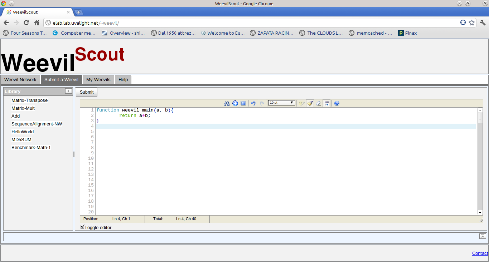
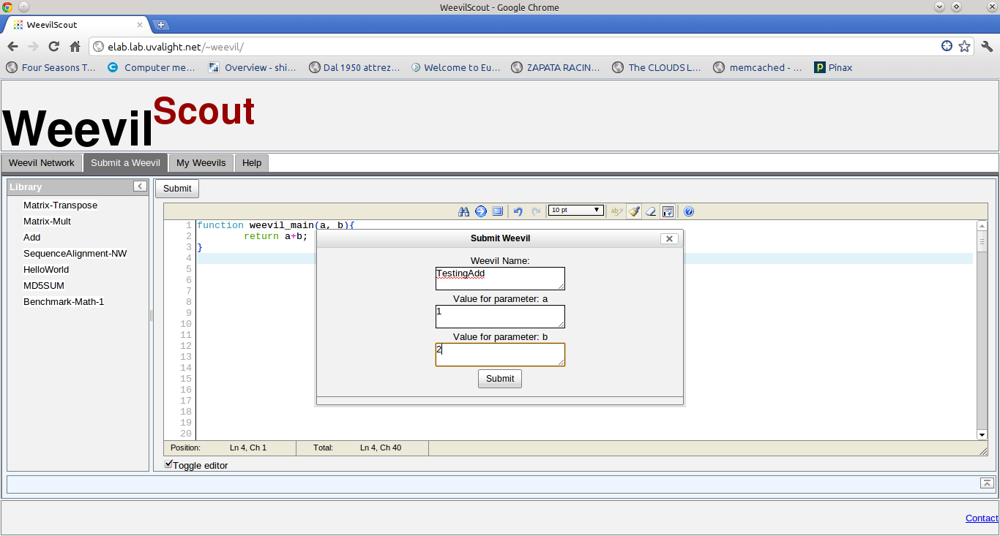
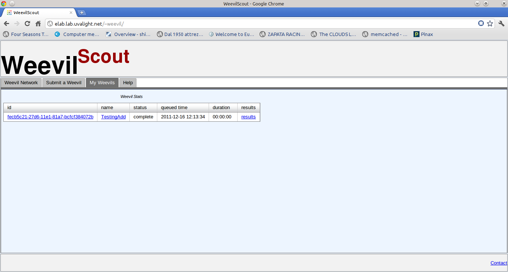

Easy Steps to Get Started
Click Submit Weevil Tab
A few example weevils can be found in the left panel. You can write your own or edit one of the available weevils. Weevils are pure Javascript the only requirement is that the main function is named weevil_main(). Any number of parameters can be passed.

Submit the Weevil
When submitting a weevil a window pops up where you give a name for the weevil you are submitting example test1. Also values for the defined parameters should be entered here.

Wait for Results
The state and results for the submitted jobs can be found under the MyWeevils tab. The table is update every 30seconds so it may take a few seconds until you can see your job in the table. If the state indicated complete you can access the results from the link on the last column.
